Kart
Kartene over Oslomarka
71 kart over Oslomarka, fra «Plan af Egnen omkring Christiania» (1790) til nyere tur- og skikart – med kartografene og utgiverne bak.

1907
Voksenkolen-Holmenkollen-Slemdal-Vettakollen-SognsvandVoksenkolen-Holmenkollen-Slemdal-Vettakollen-…
Abrahamson, Alfred, Qvale, Finn · Cammermeyers Boghandel
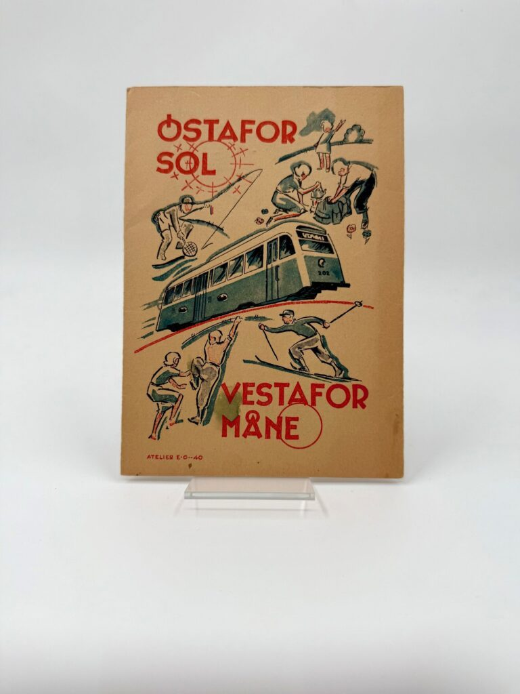
1940
Østafor Sol Vestafor Måne (sommerturer, skiturer, 2 kart)
Atelier E.O. (Ovrum) · A/S Bærumsbanen

1912Nordmarkas sydlige
Nordmarkas sydlige
del. Ski og Turistkart
Bentzen, Louis, Qvale, Finn · Voxenkollen Kurhotel
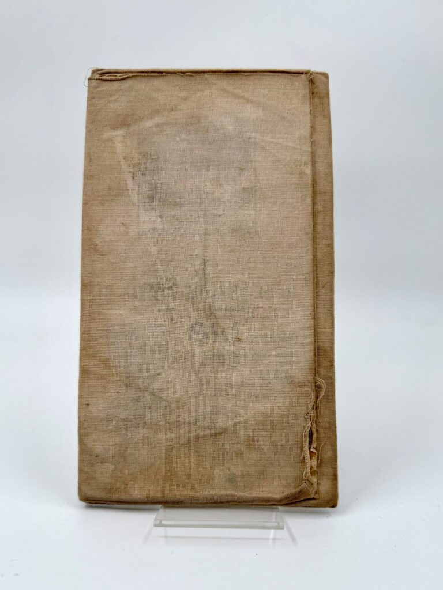
1916Nordmarkas sydlige
Nordmarkas sydlige
del. Ski og Turistkart
Bentzen, Louis, Qvale, Finn · Voxenkollen Kurhotel

1872
Hønefos 19 B (kart med Nordmarka og Krokskogen)
Bergh, Hans Nielsen, Nordhagen, Johan · NGO

1872
Hønefos 19 B (kart med Nordmarka og Krokskogen)
Bergh, Hans Nielsen, Nordhagen, Johan · NGO
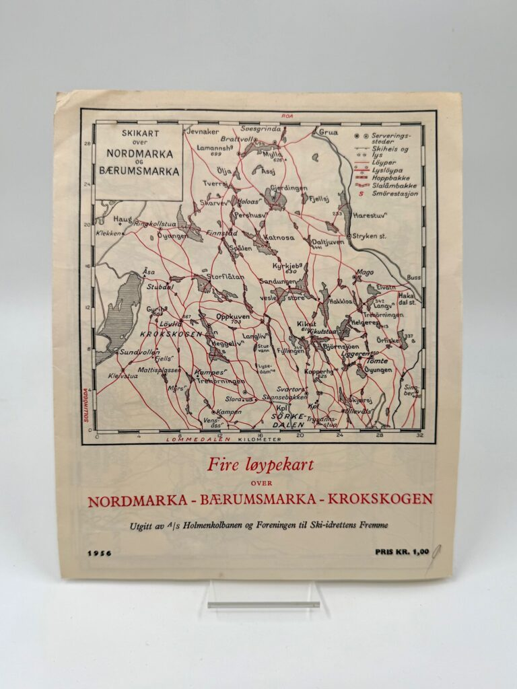
1956
Fire løypekart over Nordmarka – Bærumsmarka – Krokskogen, side 1Fire løypekart over Nordmarka – Bærumsmarka –…
Bj.A. · A/S Holmenkollbanen og Skiforeningen

1956
Fire løypekart over Nordmarka – Bærumsmarka – Krokskogen, side 2Fire løypekart over Nordmarka – Bærumsmarka –…
Bj.A. · A/S Holmenkollbanen og Skiforeningen
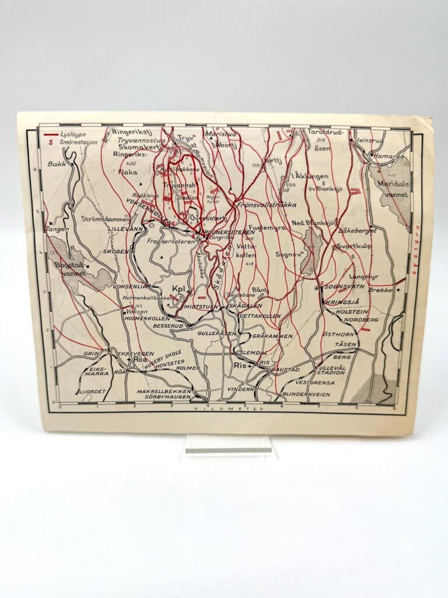
1956
Fire løypekart over Nordmarka – Bærumsmarka – Krokskogen, side 3Fire løypekart over Nordmarka – Bærumsmarka –…
Bj.A. · A/S Holmenkollbanen og Skiforeningen
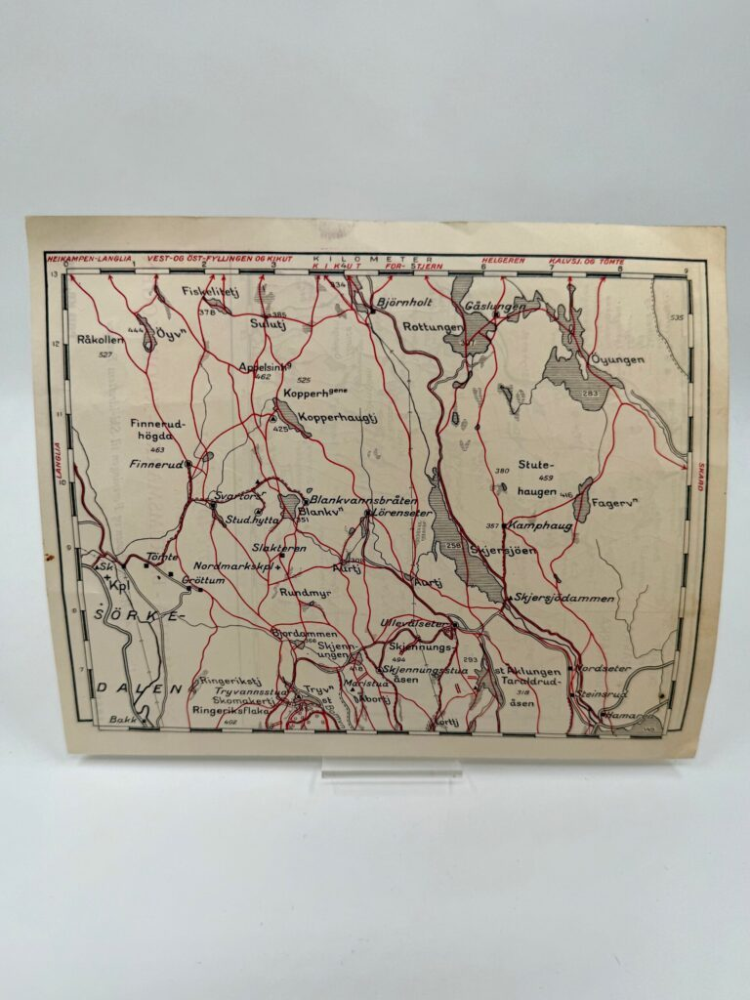
1956
Fire løypekart over Nordmarka – Bærumsmarka – Krokskogen, side 4Fire løypekart over Nordmarka – Bærumsmarka –…
Bj.A. · A/S Holmenkollbanen og Skiforeningen

1890
Kart over Nordmarken og Sörkedalen for skilöbere og turister
Bjerknes, Ernst · Ernst Bjerknes

2003
Sørkedalen – bygda i byen (kart med hoppbakker og alpinanlegg)Sørkedalen – bygda i byen (kart med hoppbakker og…
Christensen, Trygve · Sørkedalen Historielag
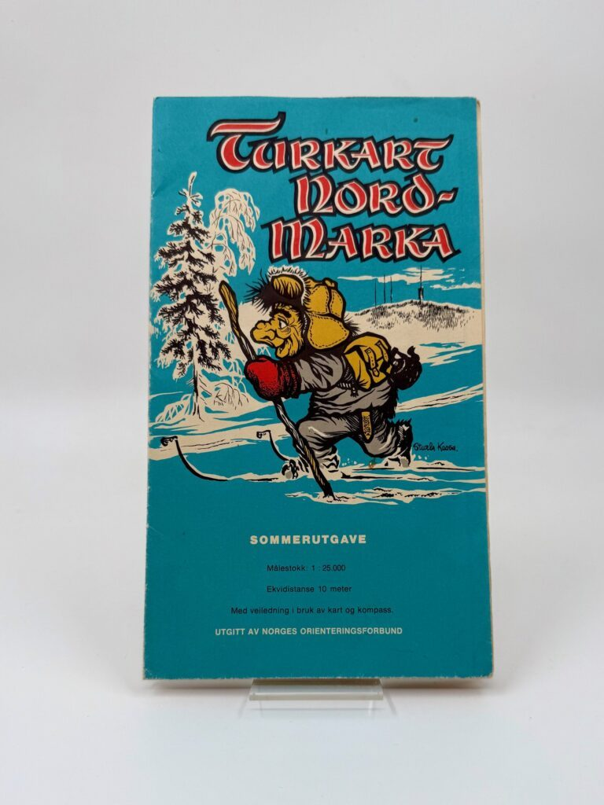
1965
Turkart Nordmarka. Sommerutgave. Med veiledning i bruk av kart og kompass (baksiden)Turkart Nordmarka. Sommerutgave. Med veiledning i bruk av…
Foto-kart, Kongsberg · Norges
Orienteringsforbund
Orienteringsforbund

1993
Turkart Nordmarka. Vinterutgave med skiøyper
Hegna, Trond · Nydalen Skiklubb | OSI
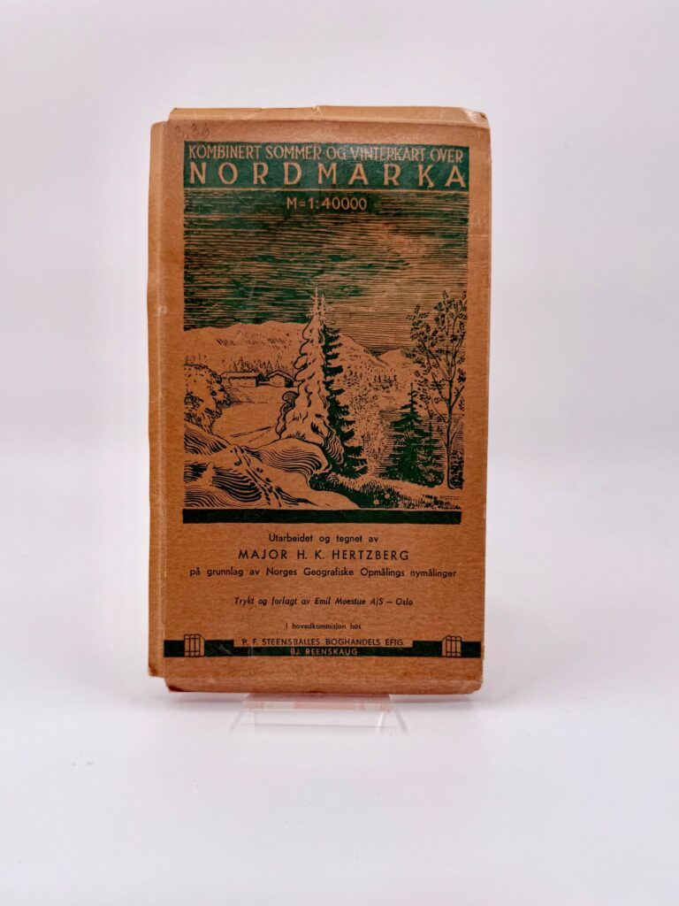
1934
Kombinert sommer og vinterkart over Nordmarka
Hertzberg, Hans Knagenhjelm · Emil Mostue A/S - Oslo
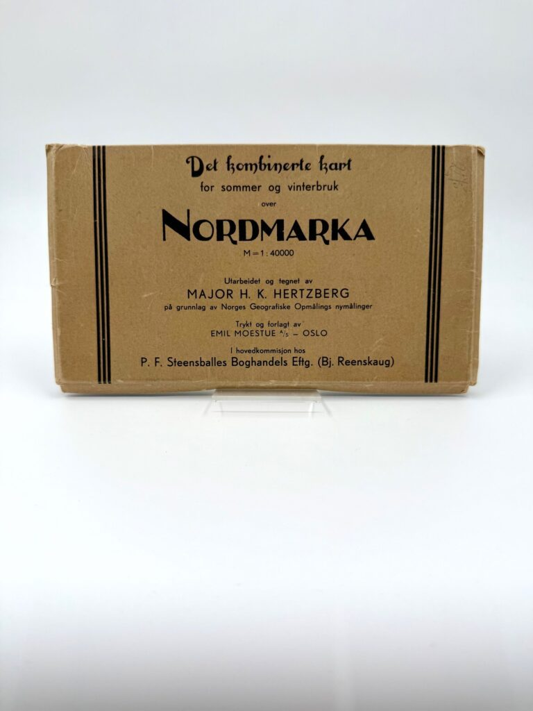
1933
Kombinert sommer og vinterkart over Nordmarka
Hertzberg, Hans Knagenhjelm · Emil Mostue A/S - Oslo
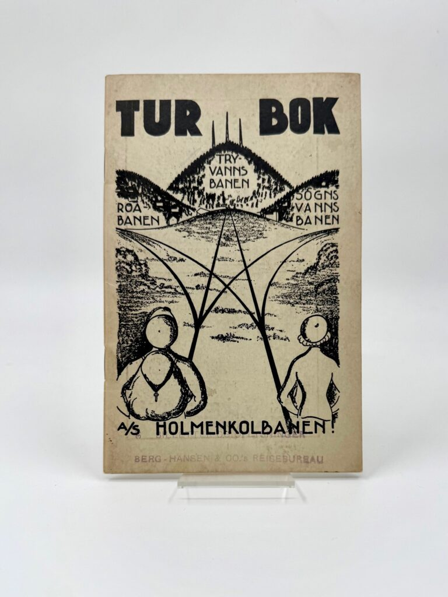
1935
Kart over Tryvannsbanen – Holmenkollbanen, Sognsvannsbanen, Smestad-…Kart over Tryvannsbanen – Holmenkollbanen,…
Huseby, Olaf Herman · A/S Holmenkolbanen
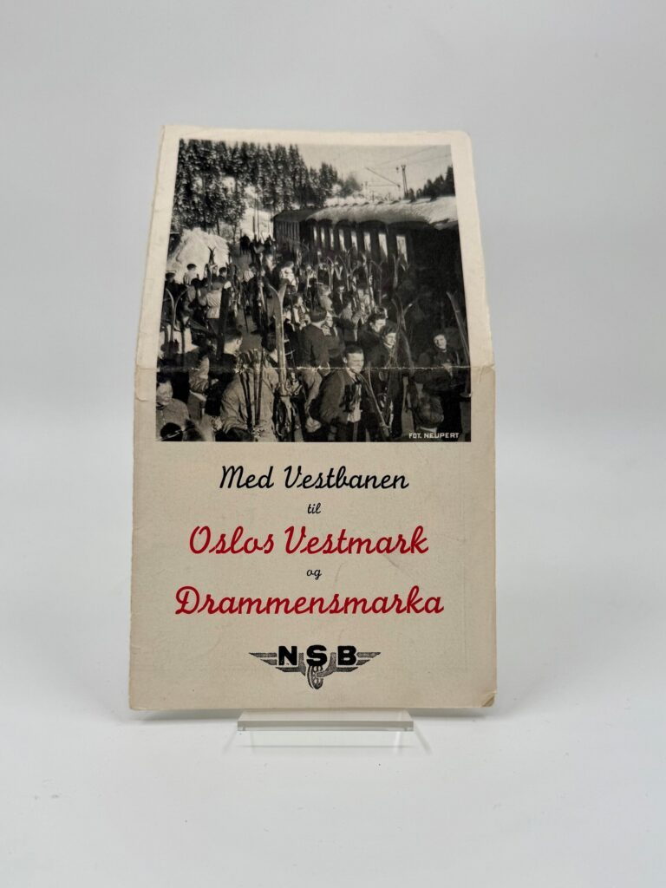
1939
Med Vestbanen til Oslos Vestmark og Drammensmarka
Huseby, Olaf Herman · Norges Statsbaner
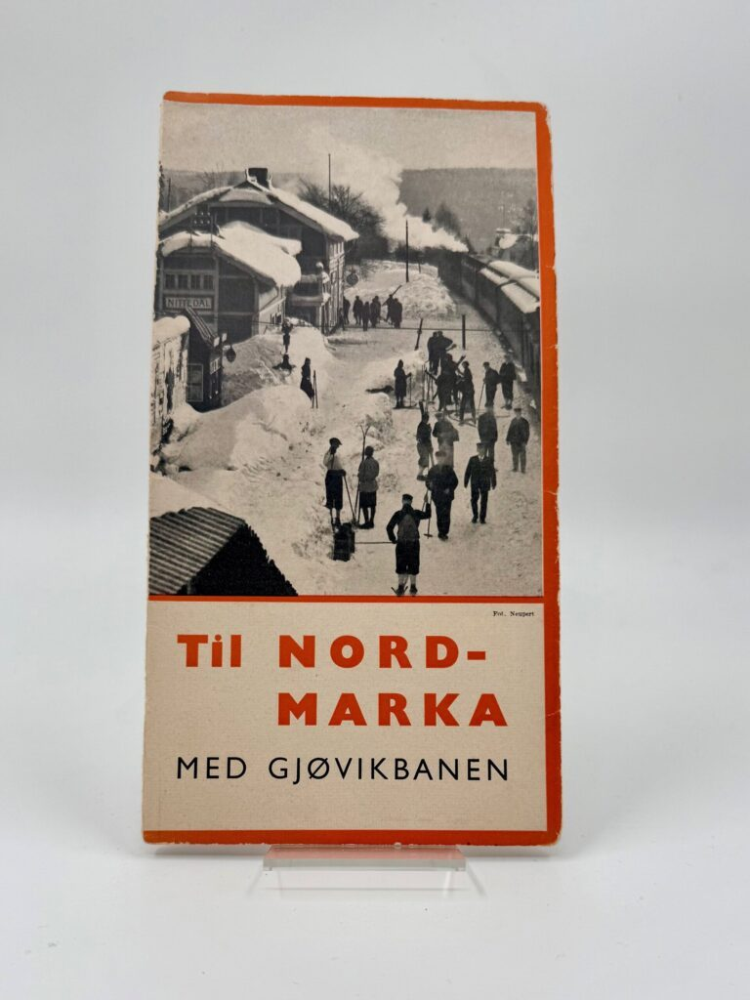
1936
Til Nordmarka med Gjøvikbanen. Skikart over Nordmarka
Huseby, Olaf Herman · Norges Statsbaner
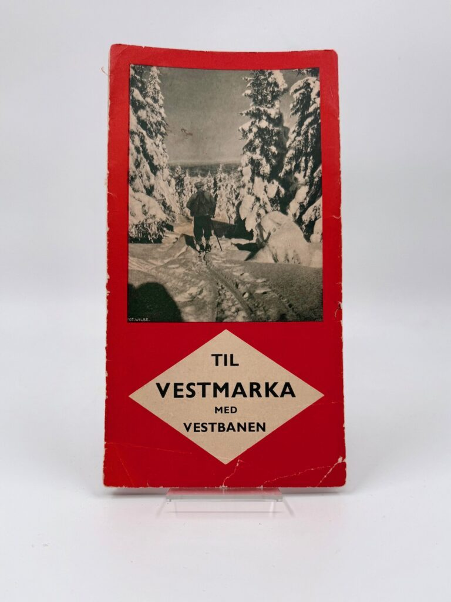
1935
Til Vestmarka med Vestbanen
Huseby, Olaf Herman · Norges Statsbaner
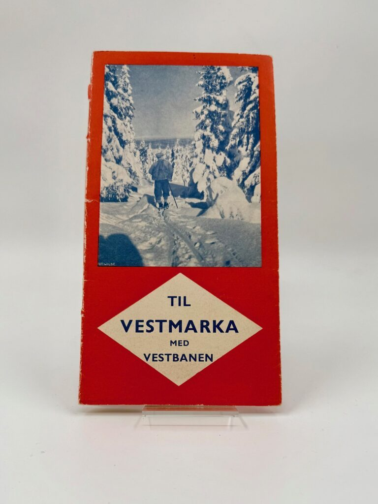
1934
Til Vestmarka med Vestbanen
Huseby, Olaf Herman · Norges Statsbaner

1935
Skikart Til Nordmarka med Kjelsås-Sporveien
Kjelsås Sporveien/drevet av Holmenkollen · Emil Mostue AS
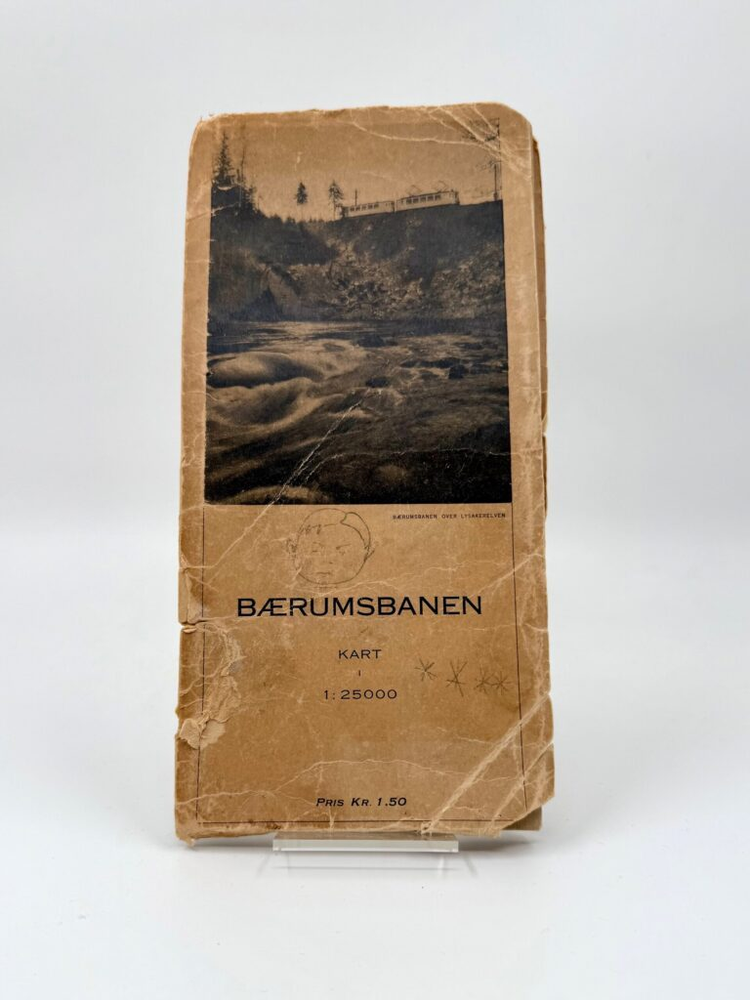
1925
Kart over Bærumsbanen med veiledning for skiløbere
NGO, Qvale, Finn · A/S Bærumsbanen

1931
Kart over Bærumsbanen med veiledning i kartets brukKart over Bærumsbanen med veiledning i kartets…
NGO, Qvale, Finn · A/S Bærumsbanen
Viser 24 av 71